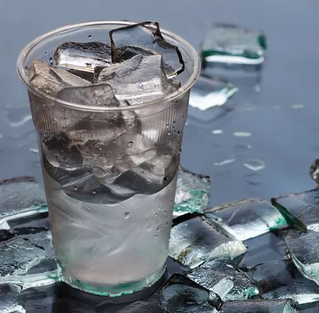
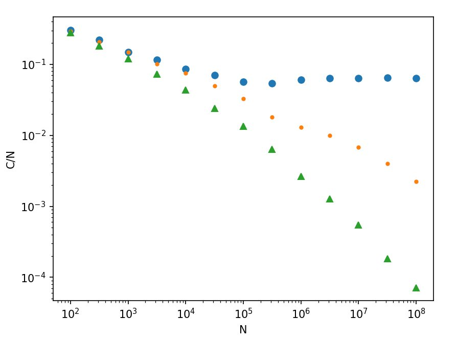

Work History
Glyphic Bio - De novo protein sequencing using nanopores
Built the instrument control software for the prototype sequencer, then pivoted to Glyphic's real time sequencing platform. Managed the project that lifted the entire bioinformatics pipeline into Nextflow, reducing unit compute costs by more than 5x. Primary owner of the company's cloud infrastructure. Built a handful of custom tools for ingesting and analyzing lab data from scratch.
Ruby Robotics - Automated tissue biopsy platform
Acquired by Intuitive Surgical in 2025
Over a few months, built a C# app that enabled cytopathologist end-users to navigate thousands of high-resolution tissue scan images. Helped refactor instrument control code that performed the tissue scans, speeding them up significantly.
Deepcell - Pioneering the morpholome
Built the instrument code (C#) for the next-generation prototype instrument, a platform for high throughput single-cell sorting and deposition.
GenapSys - Next-gen sequencing platform
Refactored the entire primary analysis pipeline, plugging C modules into Python to achieve massive speedups and more efficient resource use. Became primary owner of the pipeline code delivered to customers with the sequencer.

Preamble
Phase Transitions
We're all familiar with the idea of a phase transition—the ice melting in your glass of water, for example. In a simple sense, a phase transition describes a point where a system abruptly changes between two distinct states. Allowing time for things to equilibrate, the ice will turn to water ever so slightly above 0°C, and back to ice ever so slightly below it. In this case, 0°C is what's called the critical point.
Intro
Graph Theory
A "graph" in this context is math parlance for a network. Graph theory is something of a young field, tracing its origin back to a paper by Leonhard Euler about the Seven Bridges of Königsberg. In its simplest form, a graph contains only two elements: vertices and edges. Any vertex can be connected to any other through an edge.
Background
Percolation
Let's start with an "empty" graph of vertices with no edges, then one at a time we'll add an edge. If we choose which two vertices to connect uniformly at random, we'll have what's called an Erdős–Rényi random graph. Add enough edges and eventually every vertex in the graph becomes connected into a single cluster. The process of adding links until reaching the point of full connectivity is called percolation.
Background Cont'd
Percolation & Phase Transitions
One way to describe a phase transition is by its order parameter, a quantity that changes abruptly at the transition's critical point. With that in mind, let's look at what happens when we track the size of the largest connected cluster as we add edges to an empty graph. As the size of the graph approaches infinity, it will naturally start near zero, but add edges until there are right around half as many as there are vertices (averaged over many realizations) and all of a sudden the largest cluster starts growing from nearly zero to encompass the entire graph. Just what we'd expect from a phase transition.
Motivation
Guided Percolation
Erdős–Rényi growth is an example of a continuous phase transition, where the order parameter remains smooth at the critical point. In 2009, a paper by Achlioptas et al. contended that by considering a selection criterion during the addition of each edge, it was possible to achieve a discontinuous transition. Though this contention turned out to be incorrect, the process of guiding percolation through a selection criterion can still change both the location of the critical point, and the overall "speed" of the transition.
Our Research
Localized Selection Rules, Tunable Criticality
The selection criterion considered by Achlioptas et al. requires knowing the state of the entire graph at all times to enact. We developed a criterion that requires only knowledge of the local state for each vertex under consideration. We demonstrated that this type of selection criterion retains the slower "speed" of an Erdős–Rényi transition, while admitting tunability of the critical point—essentially, a delay in the onset of the phase transition—similar to the Achlioptas process.
Publication
We introduce a guided network growth model, which we call the degree product rule process, that uses solely local information when adding new edges.
🗎 Read paper (APS) | 🗎 Read paper (arXiv)Projects
Degree Product Rule — MATLAB to Rust Rewrite
Percolation Simulator · Rust, Rayon, Union-Find
During my PhD, I developed a code in MATLAB for studying a new method of guided percolation on random graphs, which we called the Degree Product Rule (DPR) process. Because these types of guided growth processes are highly path-dependent, studying them requires doing finite-size scaling in order to infer behavior at the thermodynamic limit, which in turn entails running many growth simulations up to as large a network size as possible.
At the time, we used MATLAB plugins to accelerate the code, but anyone familiar with MATLAB will know that these were still far from optimal implementations. I recall submitting jobs to the compute cluster we were fortunate enough to have on campus, often waiting a full day to get results back from the upper end of our network size window.
Thankfully, we squeezed enough performance out of MATLAB to get the results we needed, but with the advent of AI coding tools it seemed like a great time to revisit the code and get a sense of what an optimized buildout looks like. I decided to have Claude take a look at translating it into Rust, with the following optimizations among the improvements:
| Aspect | MATLAB | Rust |
|---|---|---|
| Cluster tracking | O(N) linear scan | O(α(N)) path-halving Union-Find |
| Edge deduplication | Cell array of sparse vectors | FxHashSet<u64> |
| Parallelism | parfor (Toolbox required) | Rayon work-stealing, no license needed |
| RNG | Shared state | Xoshiro256++ per thread |
| k=2 fast path | General loop | Inline, zero heap allocation per step |
The Rust implementation includes CLI subcommands for scaling sweeps, averaged order-parameter curves, single-realization growth, and the global-choice analytical limit. Parallelism scales automatically across all available cores, with memory-aware thread capping for large N runs on AWS.
The upper limit of our network size in graduate school (107 edges), which used to take hours per simulation run on a compute cluster instance, can now run on my laptop in less than a second! The compute and memory requirements scale like a power law with network size, but even still I'm now able to push up to the next order of magnitude in system size (about 1 minute per simulation). Good news—the scaling still holds!

Feel free to reach out about research collaborations, professional opportunities, or anything else. I'm always happy to connect.